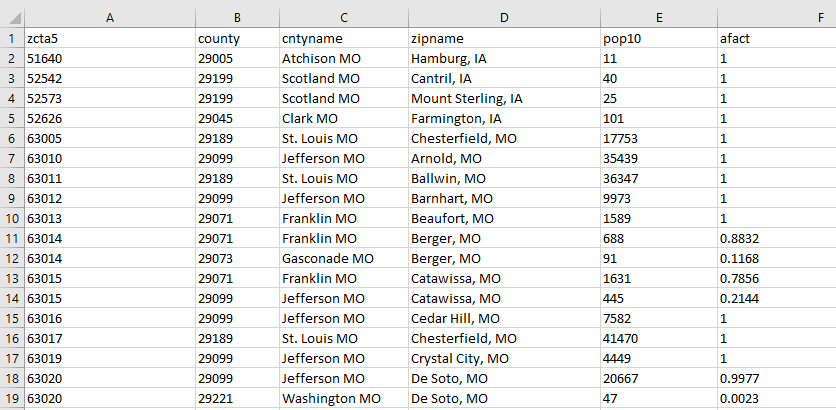
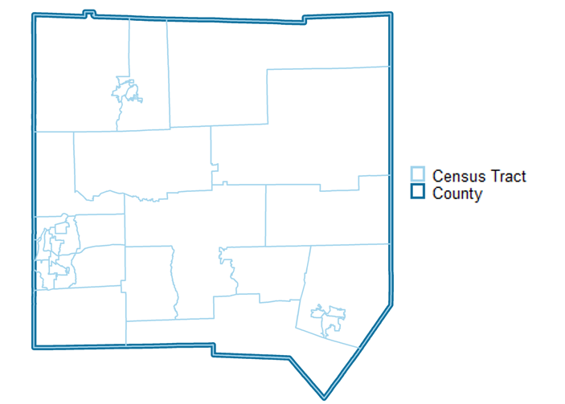
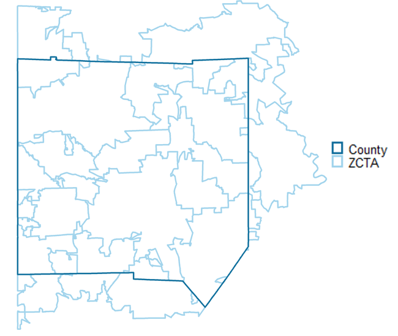
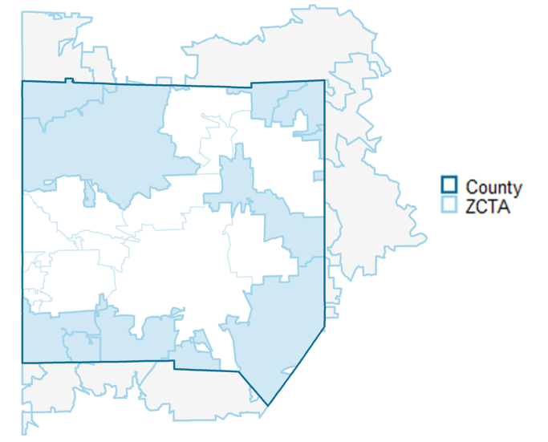
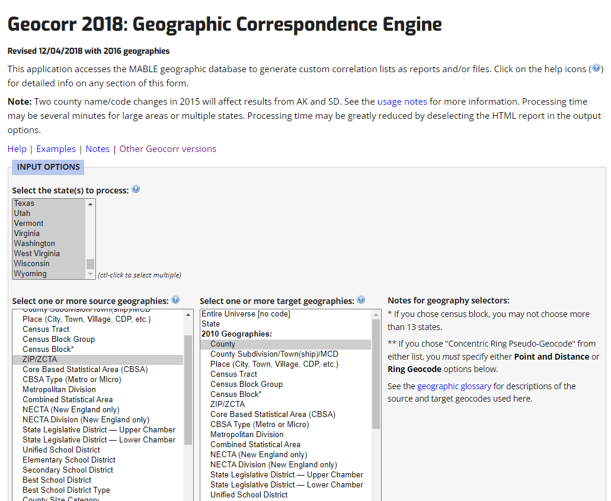

library(tidyverse)
library(sf)
options(scipen = 999)
# read in first shapefile
source <- st_read("https://coding-library.s3.amazonaws.com/shape_1.geojson")
# read in second shapefile
target <- st_read("https://coding-library.s3.amazonaws.com/shape_2.geojson")
# get land area of your source geographic data
source_1 <- source %>%
mutate(source_area = st_area(.))
# get intersections and create your crosswalk
int_area <- st_intersection(source_1, target) %>%
mutate(my_int_area = st_area(.), # add intersection area
land_afact = as.numeric(my_int_area) / as.numeric(source_area)) # create variable that describes the percent of the source land area that is in the intersection with the target areaGeographic Crosswalks at Urban
What Are Geographic Crosswalks?
Urban researchers often conduct analyses that require the use of data that contain geographic information. What do we do, though, when we have multiple data sources at different geographic levels, such as census tract, zip code, place, or state? What if we have data at one level of geography but do not have data at the geographic level we want represent? And how would we standardize geographies that change spatially over time? (Looking at you census tracts!)
We need a tool to transform data from one spatial level to another. This is a crosswalk! Geographic crosswalks, also called correlation lists, equivalency files, or geographic correspondence files, allow us to approximate data from one geographic level to another.

This image is an example of a geographic crosswalk - from ZCTA to county. We will go into more detail later as to how to use this to approximate data at one geographic level from another.
Geographic Crosswalk Structure
A geographic crosswalk is a tabular dataset with at minimum the following two columns:
- a source geography - a column that uniquely identifies the geographic scale of the source data
- the target geography - a column that identifies the geographic coverage which we want to relate to the source areas; the geography of the data we want to end up with
If your geographies are not nested (more on that later), there also may also be a couple other relevant columns:
- a size - a column that identifies some value to the size of an intersection, like population or land area
- a weight (also known as an allocation factor) - a column that identifies the portion of the source area that is located in the target area
Each row in the crosswalk represents an intersection between the source and target geographies. For not nested data, generally a weight is required to allow to approximate the portion of the data in the source area that is located in the target area.
Do I Need A Crosswalk?
We often use geographic crosswalks when:
- We have multiple data sources at different geographic levels and want to merge those data together by geographic location
- We have data at one level of geography but do not have data at the geographic level we want to represent
- We want to standardize geographies over time
We do not need to use geographic crosswalks when:
Data is available at the geography we need it to be. It is usually much better to download data at the geography you need it than to go through a geographic crosswalk. This can save some steps and reduce error, especially if your data is not nested (more on that later).
We have address data and we would like to add information regarding a geographic boundary. If you have address data, you can do a spatial join instead of using a geographic crosswalk to add geographic information, as long as the geographic data (such as a shapefile) is available. To do so in R, you can use
sf::st_jointo complete this task.
Are My Geographies Nested?
One of the key things to determine before using a geographic crosswalk is to consider whether the geography of the data you already have is nested within the geography that you would like to have. Your geography is nested if, when aggregating, it completely and neatly fits within the desired geography.
For example, let’s say you have data at the census tract level, but would like to represent your data at the county level. Census tracts are nested within counties, meaning they completely are encompassed by counties and there is complete overlap when aggregating census tracts to counties.

Data is not nested if the boundaries do not align spatially even upon geographic aggregation.
For example, Zip Code Tabulation Areas (ZCTAs), which are Census-created spatial approximations of zip codes, are not nested within counties (or states for that matter).

Note
When going from a source larger geography to a target smaller geography, we would consider that transformation unnested, even if the target geography is nested within the source geography. The direction matters: census tract are nested within counties, but counties are not nested within census tracts.
Why is Nested Data Important?
Nested data is important when using geographic crosswalks because it makes the transformation from one geography to another much more simple.
With data that is not nested, we will need to approximate the area that intersects with the geography you are transforming to. We can use our geographic crosswalk to do so.

In this image, the shaded blue portions of the ZCTAs represent the intersection areas where the ZCTAs and county overlap, while the shaded gray portion represents where those same ZCTAs are outside of the county.
When doing a crosswalk conversion, we need to deal with this use case, where part of a geography is split by another geography.
Note
If you have the choice between going from a nested source data or an unnested source data, it is best to use nested data. With nested data, geographies perfectly align and error will be reduced. For example, if your target is the county level, and you have both census tract and ZCTA level data, use the census tract data to aggregate to county.
Common Nested Geographies
The Census Bureau defines and releases spatial data at multiple geographic levels to support censuses and surveys and create standards across governmental units. As Urban researchers, we often use Census Bureau survey and geographic data, such as data from the Decennial Census or the American Community Survey.
All Census Bureau geographies are built from the census block level, which are the smallest Census Bureau geographic unit. So all blocks are nested within every other census geography. There are also other geographies that are nested within one another, such as census tracts within counties and counties within states.

This diagram shows the relationship between Census-created geographies. Each of the lines represents a nested relationship. Blocks are nested within all census geographies and are building blocks for them. Going up the center of the diagram, each geography is nested within the one above it; census blocks within census block groups, census block groups within census tracts, census tracts within counties, counties within states, ect.
This diagram is a great place to start if you want to know if your census geographies are nested.
Note
There are some missing nesting relationships missing in this diagram, such as census tracts being nested within Public Use Microdata Areas and counties being nested within Core Based Statistical Areas.
Obtaining Geographic Crosswalks
In this section, we delineate numerous ways of obtaining of creating geographic crosswalks.
Smallest Source Geography Possible
When crosswalking unnested geographies, we strongly recommend to use the smallest geography possible for the source geography. It will dramatically reduce the error when approximating your data at the target geography. For example, if you have data at both the census tract level and the county level, and are trying to approximate to the place level, use the census tract to crosswalk to place.
Census Geographic Transformations
For most geographic transformations that use geographies derived from the Census Bureau for the United States, we recommend using the Missouri Census Data Center’s Geocorr tool. This tool will allow you to create crosswalks for unnested and nested data by state.
Multiple Versions
There are multiple versions of the Geocorr tool, each that you can use for a different use based on the years of your data. For most geographic transformations for data with year 2010 defined geographies, we recommend using Geocorr 2018. For 2020 geographies, use the most recent version, which as of now is Geocorr 2022

Choosing States, Source, and Target Geographies
You must first choose which states you want to include for the crosswalk. You can ctrl+click to choose more than one, and indeed can select all of the states using shift+click if you want to run a crosswalk that contains crosswalk information for the entire nation.
You then will want to choose your source geography on the left side, or the geography of the data that you have. You can choose your target geography on the right side, or the geography of the data that you want to convert your data to be at the end.
Choosing Weights
You then have to decide how you want to weight the intersections between your source geography and your target geography.
Which weight you choose will only matter if you have unnested data. Let’s take a look at our unnested map from before.
The dark blue areas represent the intersection between the source geography (ZCTA) and the target geography (county). Geocorr gives us the option to represent that intersection in a size variable. They do this for most variables by aggregating Decennial Census data from the census block level to create as accurate of a count of the intersection as possible. These size varibles are then used as the numerator, with the denominator as the full number of that variable for the entire source geography (ZCTA), which creates the final weight.
There are multiple options for weights for different years, but three common ones are:
- Population weights: This is the default. You may want to use this if your data has to do with residents or about populations of people.
- Housing Unit weights: You may want to use housing units if your data is about housing units or information about the buildings that people are living in.
- Land Area: You may want to use land area if your data has nothing to do with where people are living or spending their time. In general, we try to not use land area too much, as population and housing unit weights are generally more relevant to questions of public policy.
Running the Crosswalk Request
To run the request to make the crosswalk click the “Run Request” button. Don’t be alarmed if nothing seems to happen immediately; the crosswalks take some time to be generated. The entire screen should change to a new page when the crosswalk has been generated for download.
Geographic Identifiers and Collapsing GEOIDs
If you have determined that your geographies are nested, you may not need a formal geographic crosswalk at all. This would be the case if your data is nested in such a way that you already have all the information you need to create your own crosswalk.
Below is a table from the Census that displays Census geographic identifiers (GEOIDs) and the hierarchical relationship of different geographic areas to one another.
| Geographic Level | Structure | Number of Digits | Example Area | Example GEOID |
|---|---|---|---|---|
| State | STATE | 2 | Texas | 48 |
| County | STATE + COUNTY | 2+3 = 5 | Harris County, Texas | 48201 |
| Tract | STATE + COUNTY + TRACT | 2+3+6 = 11 | Tract 2231 in Harris County, Texas | 48201223100 |
| Block Group | STATE + COUNTY + TRACT + BLOCK GROUP | 2+3+6+1 = 12 | Block Group 1 in Census Tract 2231 in Harris County, TX | 482012231001 |
| Block | STATE + COUNTY + TRACT + BLOCK GROUP + BLOCK | 2+3+6+4 = 15 | Block 1050 in Census Tract 2231 in Harris County, TX | 482012231001050 |
| Places | STATE + PLACE | 2+5 = 7 | Houston, TX | 483500 |
| County Subdivision | STATE + COUNTY + COUSUB | 2+3+5 = 10 | Pasadena CCD, Harris County, TX | 4820182875 |
| Congressional District (113th Congress) | STATE + CD | 2+2 = 5 | Connecticut District 2 | 0902 |
| State Legislative District (Upper Chamber) | STATE + SLDU | 2+3 = 5 | Connecticut State District 33 | 09033 |
| ZCTA | ZCTA | 5 | Suitland, MD ZCTA | 20746 |
Let’s say you have your source data at the census tract level and your target data at the county level. Because the census tract identifier already has the information you need to create a county identifier (the first five digits of the full tract GEOID), you can actually create the crosswalk fairly easily!
Crosswalks Over Time
Large geographic changes to census geographies generally happen every 10 years during the Decennial Census. We can use a geographic crosswalk to standardize geographies over time for better comparison and empirical evaluation.
There are multiple sources of crosswalks for geographies over time for various Census geographies. As is true for all geographic crosswalks, it is best to use the smallest geography possible for your source geographies. To that end, if you have data from the Census that you would like to standardize over time, it is generally best to use a census block (from old year) to census block (more current year) crosswalk.
From census blocks, you can aggregate to any Census geography that you need to create your eventual target geography.
Options for Crosswalks Over Time
IPUMS NHGIS has great block-to-block crosswalks that are available for each combination of decades between 1990 and 2020. They also release data already standardized over time in their time-series tables, which they offer for a subsample of Decennial Census and American Community Survey tables.
The Census Bureau offers block-to-block crosswalks from 1990-2000, 2000-2010, and 2010-2020 by state. They also offer other geographic relationship files, such as tract relationship files, for those same years.
The Longitudinal Tract Database (LTDB) offers tract to tract crosswalks for each decade from 1970 to 2020, all with targets at 2010 tract boundaries. This is useful if your data’s smallest geography is at the tract level (so non-census data) or if you need to crosswalk census tracts from pre-1990 years.
Zip Code to ZCTA crosswalk
Zip codes are USPS generated codes that contain information about mail delivery routes, but are not areal representations. The Census Bureau has created areal representations of zip codes - Zip Code Tabulation Areas (ZCTAs).
If you have zip code data and need to have ZCTA data instead, we often use this crosswalk from UDS Mapper.
Creating Your Own Crosswalk
If you have non-census geographies, you may be able to create your own geographic crosswalk if you have spatial data files (like shapefiles) for your source and target geographies. If you do, you could use R’s sf package to create the crosswalk using st_area and st_intersection.
Note
We recommend only creating your own crosswalks if at least one of your geographies is not from the Census Bureau. If both are, using Geocorr from the Missouri Census Data Center is recommended.
Using Land Area Weights
This section identifies steps to create a land-area weighted crosswalk between an example source and target geography in DC. The steps are as follows:
- Use the
sfpackage to get the total land area of the source geography. - Get the spatial intersection between the source and target geographies and find the land area of those intersections.
- Create the final weight by dividing the land area of the intersection by the land area of the source geography. This metric tells us what proportion of land area the intersection is of the entire source geography by land area.
Adding Population Weights
This section identifies how to create a population-weighted crosswalk between non-census geographies. The steps are as follows:
- Do the above steps to create the spatial intersection dataset.
- Download the smallest level of geography variable from the census, the census block, from the 2010 Decennial Census. This dataset has both population and spatial information about census blocks in 2010.
- Get the centroid of the census block in order to join those blocks with our spatial intersection data. We do this because blocks likely do not fit neatly into non-census geographies.
- Do a spatial join of those centroids (with population data on them) to the spatial intersections we made when creating the land use crosswalk.
- Group by the source and target geographies and aggregate the population in order to identify the total population represented in each intersection between source and target geographies.
- We group by the source geography and add a column that identifies how much population is estimated to be in the entirety of each source geography.
- We create a population weight that is the estimated population in the intersection over the estimated population of the source geography.
library(tidycensus)
# get 2010 decennial block population and spatial information
my_blocks <- get_decennial(geography = "block",
variables = "P001001",
year = 2010,
state = "DC",
geometry = TRUE
)
# create block centroids
block_centroids <- st_centroid(my_blocks)
# create population crosswalk
int_block <- st_join(int_area, block_centroids) %>% #join spatial intersection data with block centroids
st_drop_geometry() %>% # drop the spatial information for ease of use
group_by(source_geo, target_geo) %>% # group by the source and target geography
summarise(pop10 = sum(value, na.rm = TRUE)) %>% # aggregate and collapse the population data by source and target geography
group_by(source_geo) %>% #group by the source geography
mutate(source_pop = sum(pop10, na.rm = TRUE)) %>% # create total population in source geography variable
ungroup() %>% # ungroup data
mutate(afact = pop10 / source_pop) # create final weight
Note
There may be some error using this method to create population-weighted crosswalks, as block centroids are used to approximate the location of where people are living, where in reality the population may be disbursed non-randomly through a block. Because census blocks are small, however, the error is likely not drastically high.
Using Crosswalks
In this section we go over how to use a geographic crosswalk to approximate data from one geography to another geography.
There are multiple ways to use a crosswalk to estimate a target geography from a source geography. To better understand how one such way might work, here is a short algorithm for one of those methods.
Let’s say you have data on the number of trees in a specific source geography, and you want it to be at the target geography.
- Join the crosswalk to your data by the source geography identifier
- Multiply the number of trees by the weight
- Summarise and aggregate the result of Step 2 grouping by the target geography
We will go into more detail about this method and other methods below.
Crosswalk Preparation
While some crosswalks are already clean and ready to go, you may need to clean your crosswalk in order to make it ready to use. Below is an example of howe might clean a Geocorr tract to place crosswalk in Pennsylvania.
Generally, when we get crosswalks from Geocorr, the first row of the dataset contains the column names, while the second row contains the description. This poses problems when reading in because vector types will not be guessed correctly by the read_csv function. To get around this, we read in the column names first and then read in the data, set the column names, and remove the unneeded description row.
We then want to create geographic identifiers that are consistent across datasets from the Census (see the table above for how many digits we expect for each geography). This requires adding leading zeros and removing unnessary characters (such as periods).
library(tidyverse)
# path to crosswalk
xwalk_path <- "https://coding-library.s3.amazonaws.com/tract_to_place_geocorr.csv"
# read in column names of crosswalk in order to read in easier
xwalk_names <- xwalk_path %>%
read_csv(n_max = 0) %>%
names()
# read in crosswalk and clean
tract_to_place_xwalk <- xwalk_path %>%
read_csv(col_names = xwalk_names,
skip = 2) %>% # read in crosswalk, removing unneeded row
mutate(tract = str_pad(as.numeric(tract) * 100,
6,
"left",
"0"), # create 6 digit tract ID, removing periods, and ensuring leading zeros
county = str_pad(county,
5,
"left",
"0"), # create 5 digit county id, adding leading zeros
source_geoid = str_c(county, tract), #combine county and tract id
placefp = str_pad(placefp, 5, "left", "0"), # create 5 digit place id, creating leading zeros
state = str_pad(state, 2, "left", "0"), # create 2 digit state id, creating leading zeros
target_geoid = str_c(state, placefp)) # combine state and place idsJoining the Data
The first step when using a clean crosswalk is to join or merge the data that you want to transform to the crosswalk by the source geography identifier. This is typically the Census FIPS code for Census data, but non-census crosswalks may have other ways of identifying unique source geographies.
As an example, let’s say that we have a dataset with information about the number of trees at the tract level that we would like to aggregate to the place level.
tract_source_data <- "https://coding-library.s3.amazonaws.com/tract_source_data.csv" %>%
read_csv() %>%
mutate(source_geoid = str_pad(geoid,
11,
"left",
"0"))
intersection_data <- left_join(tract_source_data,
tract_to_place_xwalk,
by = c("source_geoid")) Use the Weight Variable
The next step is to use the weight variable from your crosswalk to estimate your source data (such as number of trees) in the target geography. As a reminder, this weight variable is the proportion of each source geography that intersects with each target geography.
There are numerous options for using this weight variable. Which option you choose whether or not you are comfortable splitting up your data into sub-parts. For example, for count variables, which are any variable with a number of persons, places, or things you can count, you may be more easy to split up the data than a non-count variable such as a median or average.
Note
When you have count data and nested geographies, you can skip using weights entirely, as theoretically if your data is nested, all weights should be 1.
Options for Count Variables
Count variables are any data type that you can count. So if the data can fit into a “number of X” kind of variable, where x is any kind of noun, then it is a count variable. Some examples include population, households, aggregate income, number of people by race/ethnicity, ect.
Below are some options for using geographic crosswalks with count variables.
Multiplying Source Data by the Weight
One of the most common ways to use the weight is to multiply the source data by the weight variable directly, which will in effect split your source data into sub-parts. We often are comfortable doing this with count variables because by definition counts can be split up into parts without much concern.
For example, if there are 1000 trees in a source geography, and the geography was split 50/50 by two target geographies, we can easily attribute 500 trees to one of those and the other 500 trees to the other.
intersection_data <- intersection_data %>%
mutate(trees_sub_parts = number_of_trees * afact)One Target for Each Source
Another way you might use the weight is to identify for each source geography, which intersection has the highest weight, and then keep only the rows in your intersection_data that has that highest weight. You may want to do this if you were not comfortable splitting up your source geography into subparts.
intersection_data <- intersection_data %>%
arrange(source_geoid, desc(afact)) %>% #arrange by geoid and the weight, so that the higher weight is sorted first
group_by(source_geoid) %>%
mutate(rows = row_number()) %>% # for each source geoid, identify the first row (highest weight)
ungroup() %>%
filter(rows == 1) %>% # filter for only the first row by source geoid
select(-rows) # remove the rows variableOptions for Non-Count Variables
For variables that do not contain a count, such as averages or medians, it may not make sense to split up your source data into subparts. Adding medians or averages to each other theoretically may not make much sense in and of itself, which is true even if your source and target geographies are nested.
For example, let’s say you have two source geographies nested within one larger target geography. Let’s say the median incomes of these two geographies are $150,000 and $50,000. The target geography would not have a median income of $200,000, or the sum of the 2, because theoretically it would have to be between $150,000 and $50,000.
So even in the nested case, this is a problem. In the unnested case, this is even more complicated as we need to figure out how to attribute source geographies to target geographies when the source geographies are split.
Using a Count Variable to Adjust
One way to solve this problem is to use the count variable that the statistic is based on to account for the size of the source geography as well as allow for the aggregation and splitting of data.
We do this by multiplying the average or median by the count variable that is associated with that statistic. For example, if the statistic is median household income, we would multiply the median household income by the number of households that had income in that area.
For averages (not medians), this in effect creates an “aggregate” count that can be treated as any other count variable. For medians, we are weighting the median by the number of people that were used to create the statistic.
We then take the result of the above and multiply that by the weight, instead of just the median itself.
For example, let’s say we have data on the median cost of trees as well as information on the number of trees in an area.
intersection_data <- intersection_data %>%
mutate(median_cost_subpart = median_tree_cost * number_of_trees * afact)We now just have to remember to divide by the number of trees at the target geography after doing the forthcoming aggregation step.
Using the Target Weight Instead of the Source Weight
Another way of adjusting median and average columns is to use the target weight instead of the source weight. All this means is that the weight will represent the portion of the target geography that is made up of the source geography, not the other way around. This target weight is sometimes referred to as the “second allocation factor”.
To create this second allocation factor, we can use the size variable that should be included on many crosswalks. This variable is usually something like population, housing units, or land area, and represents the size of the intersection between the source and target geographies.
First, we would group by the target geography and add a column that represents the sum of the size variable for each target geography. We then create a column that is the size variable over the variable we just created that represents the total size of the target geography, creating the second allocation factor.
tract_to_place_xwalk <- tract_to_place_xwalk %>%
group_by(target_geoid) %>%
mutate(target_population = sum(pop10, na.rm = TRUE)) %>% # create variable represent population of target geography
ungroup() %>%
mutate(afact2 = pop10 / target_population) # create weight that represents how much of the target population is represented by each intersection
Note
If using a Geocorr crosswalk, you can download the second allocation factor directly by clicking “Generate second allocation factor” before running the crosswalk request.
After merging this crosswalk back onto your source data, you can create the subpart weights by multiplying the source data by the second allocation weights. Note that these subparts now represent the parts of the target geography, not the source geography, unlike the subparts from other steps.
intersection_data <- intersection_data %>%
mutate(median_cost_subpart = median_tree_cost * afact2)Summarise by Target Geography
The last step no matter which option you have chosen is to aggregate your data, grouping by the target geography. In most cases, you will be aggregating all of the subparts that you have created together to estimate the appropriate statistic at the target geography. For nested count data, you will simply be aggregating your source geographies together to create your target geography. For the option of choosing one target for each source with unnested data, you will similarly be aggregating the unsplit source data to create your target geography.
# summarise data by the target geography
final_data <- intersection_data %>%
group_by(target_geoid) %>%
summarise(number_of_trees = sum(trees_sub_parts, na.rm = TRUE))The only other step we might have to do depends if you used a count variable to adjust your median or average non-count variables. If you did, remember that you will want to divide by the count variable after aggregation to get an approximation of the non-count statistic.
final_data <- intersection_data %>%
group_by(target_geoid) %>%
summarise(number_of_trees = sum(trees_sub_parts, na.rm = TRUE),
median_tree_cost_agg = sum(median_cost_subpart)) %>% #summarise by the target geography
ungroup() %>%
mutate(median_tree_cost = median_tree_cost_agg / number_of_trees) #divide the adjusted median number by the count number in order to get back to an approximation of the median